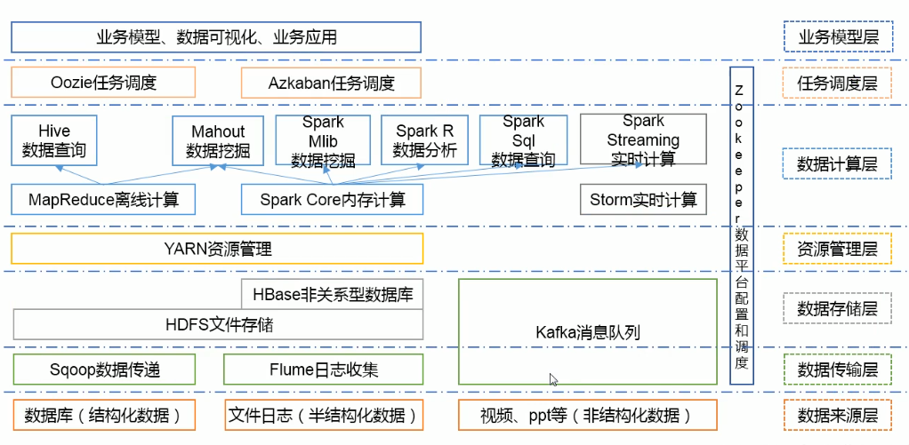

Hadoop1.x和Hadoop2.x区别
- Hadoop1.x组成
- MapReduce（计算+资源调度）
- HDFS（数据存储）
- Common（辅助工具）
- Hdoop2.x组成
- MapReduce（计算）
- Yarn（资源调度）
- HDFS（数据存储）
- Common（辅助工具）
在Hadoop1.X时代，Hadoop中的MapRudece同时处理业务逻辑运算和资源的调度，耦合性较大，在Hadoop2.X时代，增加了Yarn。Yarn只负责资源的调度，MapReduce只负责运算。
HDFS架构概述
- NameNode（nn）-类似目录：存储文件的元数据，如文件名，文件目录结构，文件属性（生成时间、副本数、文件权限），以及每个文件的块列表和块所在的DataNode等。
- DataNode（dn）-类似真正存储的数据：在本地文件系统存储文件块数据，以及块数据的校验和。
- Secondary NameNode（2nn）：用来监控HDFS状态的辅助后台程序，每隔一段时间获取HDFS元数据的快照。
YARN架构概述
- ResourceManager（RM）主要作用如下
- 处理客户端请求
- 监控NodeManager
- 启动或监控ApplicationMaster
- 资源的分配与调度
- NodeManager（NM）主要作用如下
- 管理单个节点上的资源
- 处理来自ResourceManager的命令
- 处理来自ApplicationMaster的命令
- ApplicationMaster（AM）作用如下
- 负责数据的切分
- 为应用程序申请资源并分配给内部的任务
- 任务的监控与容错
- Container
- Container是YARN中资源抽象，它封住了某个节点上的多维度资源，如内存、CPU、磁盘、网络等。
MapRudece架构概述
MapReduce将计算过程分为两个阶段：Map和Reduce
- Map阶段并行处理输入数据
- Reduce阶段对Map结果进行汇总

大数据技术生态系统
| 数据来源层 | 数据传输层 | 数据存储层 | 资源管理层 | 数据计算层 | 任务调度层 | 配置和调度 | 业务模型层 |
|---|---|---|---|---|---|---|---|
| 数据库（结构化数据） | Sqoop数据传递 | HDFS文件存储 | YARN资源管理 | MapReduce离线计算（1. Hive数据查询（javaEE）、2. Mahout数据挖掘（算法）） | Oozie任务调度、Azkaban任务调度 | Zookeeper（容易改变的配置信息） | 业务模型、数据库可视化、业务应用 |
| 文件日志（半结构化数据） | Flume日志收集 | HDFS文件存储/HBase非关系型数据库 | YARN资源管理 | Spark Core内存计算 （离线1. Spark Mlib数据挖掘、2.Spark R数据分析、3.Spark Sql数据查询；准实时批处理Spark Streaming实时计算）/Flink 流处理 | Oozie任务调度、Azkaban任务调度 | Zookeeper（容易改变的配置信息） | 业务模型、数据库可视化、业务应用 |
| 视频、ppt等（非结构化数据） | Kafka消息队列 | Kafka缓存一些数据 | Zookeeper（容易改变的配置信息） | 业务模型、数据库可视化、业务应用 |

推荐系统项目框架